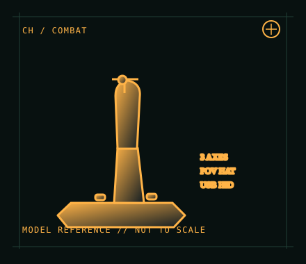

[ JOYSTICK CONTROLLERS // IDENTIFIED COMPONENT ]
CH Products Combatstick USB
Ambidextrous desktop flight stick with three axes, trigger and thumb controls for PC simulation.

MODEL IDENTIFICATION: CH Products Combatstick USB; manufacturer quick-start reference 200-568 (verify label/revision). Published family specifications may not establish the revision or condition of an individual unit; compare its label and included parts with the linked documentation.
Model specifications
| Catalog subcategory | Joystick controllers |
|---|---|
| Exact model / identifier | CH Products Combatstick USB; manufacturer quick-start reference 200-568 (verify label/revision). |
| Design and controls | USB desktop flight stick with X/Y movement, a third analog axis, trigger, push buttons and POV hat; the maker describes 18 buttons and programmable assignments. Button maps and control counts can depend on software mode. |
| Physical interface | Wired USB; standard joystick/HID behavior for basic axis and button input. It is a PC peripheral, not a console-licensed controller. |
| Host compatibility | CH lists USB operation for PC and Mac. Basic OS HID handling and game-level recognition vary by OS and application; verify the current game can map the exposed axes and hat. |
| Driver and configuration | CH Control Manager is optional Windows configuration/programming software, not a prerequisite driver for basic USB input. Confirm current compatibility before relying on legacy profiles; retain a copy of the configuration with the host image. |
Setup and control mapping
Assign X/Y to roll and pitch, the third axis to throttle or rudder, then map the trigger/buttons and POV hat in the simulator. Validate axis range and centering in the operating system’s game-controller panel before creating a per-game profile.
Before use, connect the device directly to the stated host, confirm it appears once in the operating system’s controller list, and test every axis and button. Keep host calibration separate from in-game dead-zone and sensitivity settings so later maintenance can reproduce the baseline.
Preservation and service notes
Check the gimbal for smooth travel and return-to-center, inspect cable strain relief, and exercise every button and hat direction. Keep a before/after axis test record; clean only with power disconnected and avoid liquid entering the base.
Revision caveat: Distinguish the USB Combatstick from other CH gameport-era hardware. A USB connector does not guarantee every simulator profile or legacy Control Manager feature will be available on a current OS.
For a physical archive entry, record the as-found label, serial/part number where present, accessories, host OS, driver or firmware version, and test method. Separate observed condition from published specifications.
References and support
- Combatstick — CH Products product informationManufacturer model description and product-level feature reference.
- Combatstick quick-start reference — CH ProductsModel-specific manufacturer quick-start document; compare printed revision with the unit.
Vendor pages and downloads can be revised or retired. Preserve the applicable manual locally and note its revision; use the exact product label when choosing firmware or drivers.